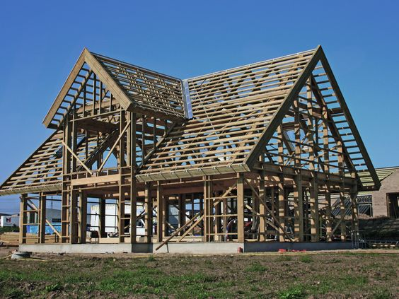
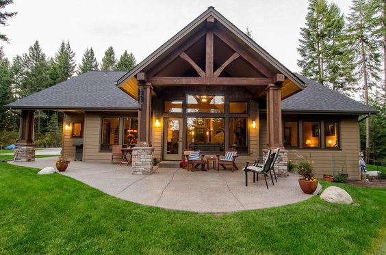

Carpintería es el oficio que trabaja la madera y sus derivados para resolver los huecos (puertas, ventanas), conectar niveles (escaleras), revestir los muros y paredes y eventualmente realizar muebles, aunque esta última actividad se denomina específicamente ebanistería. El trabajo de la madera es una de las actividades humanas más antiguas ya que la madera ha sido siempre un material asequible, ligero, fácil de trabajar y con propiedades muy adecuadas al entorno del hombre.
TIPOS
A efectos de esta publicación se puede hablar de dos tipos principales: carpintería a medida y carpintería industrial. En general, la carpintería a medida o de taller realiza pequeñas series o elementos únicos destinados a obras concretas (aunque no tiene porqué ser artesanal (puede ser industrial) mientras que la carpintería industrial se distingue porque trabaja grandes series de elementos (a stock o bajo pedido) y suele estar especializada en uno o unos pocos productos. De todas formas, la frontera entre carpintería artesanal e industrial es ahora más difuminada que antes ya que los fabricantes de maquinaria para la madera han ido desarrollando cada vez más equipos de producción industrial adaptados al taller para realizar pequeñas series.
CARPINTERÍA A MEDIDA La carpintería a medida, o de taller, bascula en torno a la figura del carpintero, cuya formación y oficio requiere una serie de habilidades muy especializadas, entre las que destacan: - conocimientos del material madera (especies, comportamiento, propiedades físicas, químicas, etc.) - conocimientos de geometría, visión espacial para poder concebir y diseñar, despiezar, montar y ajustar
